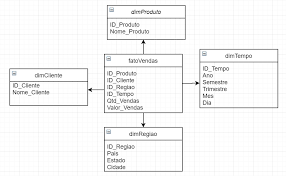

Fundamentos de Banco de Dados
Os bancos de dados são essenciais para organizar, armazenar e gerenciar informações de forma eficiente e segura. Eles permitem acessar, atualizar e compartilhar dados com integridade e consistência, servindo como base para sistemas de empresas, instituições e aplicações digitais.
Compreender os fundamentos de banco de dados envolve aprender sobre estrutura de dados, relacionamentos, tipos de dados, modelagem e regras de integridade. Esse conhecimento é importante para projetar sistemas robustos, confiáveis e preparados para lidar com volumes de informações cada vez maiores, tanto em bancos relacionais quanto em não-relacionais.
O que é um SGBD? Tipos e Aplicações
Um SGBD (Sistema de Gerenciamento de Banco de Dados) organiza, armazena e gerencia informações de forma segura e eficiente, permitindo criar, consultar, atualizar e excluir dados com integridade. Existem SGBDs relacionais, como MySQL, PostgreSQL e Oracle, que armazenam dados em tabelas interligadas, e não-relacionais, como MongoDB e Cassandra, indicados para dados não estruturados ou volumosos. Sistemas hierárquicos e em rede atendem necessidades mais específicas. Eles são usados em e-commerces, bancos, hospitais, escolas e redes sociais.

Quais os principais bancos de dados?
Entre os bancos de dados relacionais destacam-se MySQL, PostgreSQL, Oracle e SQL Server, conhecidos pela estabilidade e capacidade de lidar com informações estruturadas. Os não-relacionais, como MongoDB, Cassandra, Redis e Neo4j, são indicados para dados dinâmicos ou volumosos, oferecendo flexibilidade para aplicações modernas, como redes sociais, sistemas de recomendação e análise de dados em tempo real. A escolha depende do tipo de dados e necessidades do sistema.

O que é um dicionário de dados? Quais os tipos de dados?
O dicionário de dados descreve todas as estruturas de um banco, incluindo tabelas, colunas, tipos de dados e relacionamentos, garantindo padronização e facilitando a manutenção. Os tipos mais comuns são números inteiros e decimais, textos, datas e horários, valores booleanos e dados binários, como arquivos e imagens.

O que é uma modelagem de banco de dados? E o modelo DER? MER?
A modelagem organiza informações e relacionamentos antes da criação do banco físico. O DER (Diagrama de Entidade-Relacionamento) mostra entidades, atributos e relacionamentos de forma visual, enquanto o MER (Modelo Entidade-Relacionamento) detalha cardinalidade, regras de integridade e restrições de negócio, oferecendo uma visão completa da estrutura do banco.
Exemplo de um diagrama DER
Em um sistema de cadastro de alunos, o DER mostra entidades como Aluno, Curso e Professor, com atributos como nome, matrícula e idade, e relacionamentos que indicam que um aluno pode se matricular em vários cursos, e cada curso é ministrado por um professor. Ele ajuda a visualizar as conexões entre os dados e serve como base para o banco físico.

Exemplo de um diagrama MER
No MER, o mesmo sistema detalha cardinalidade, mostrando quantos alunos podem se matricular em cada curso, e regras de integridade, como matrícula única e obrigatoriedade de curso. Esse detalhamento garante consistência, evita duplicidades e melhora o controle sobre os dados.